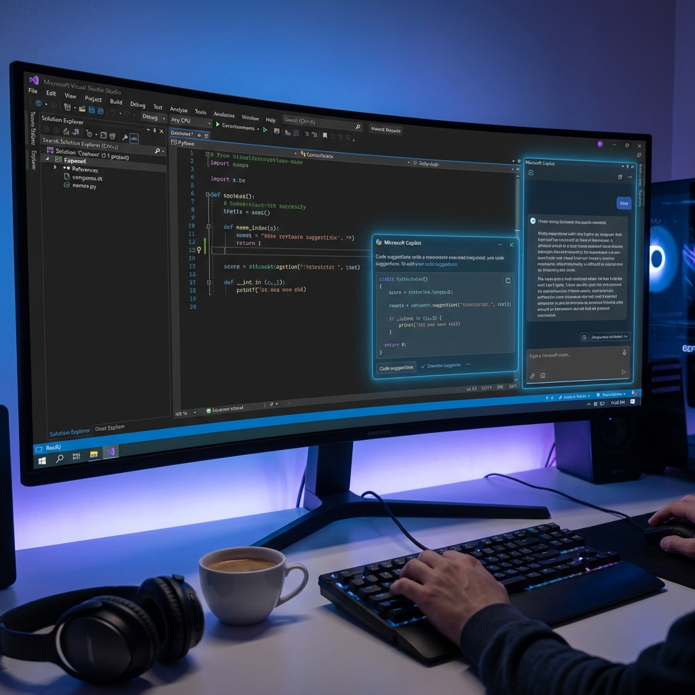

Microsoft and OpenAI have teamed up to bring Copilot to Visual Studio, making coding a breeze for developers. This is a big step towards more integrated AI in software development.

Source: The Verge AI
Original report
— Howard
2026-03-17 · Howard News Hub

Microsoft and OpenAI have teamed up to bring Copilot to Visual Studio, making coding a breeze for developers. This is a big step towards more integrated AI in software development.

Source: The Verge AI
Original report
— Howard